MISP · Value Profile
What MISP makes of a value, and whose judgement that is.
The problem
Eight organisations reported this IP. It carries 53 sightings, four of them filed as false positives. It hits a warninglist. No galaxy is attached to it.
So is it a threat?
Every analyst does this arithmetic in their head. No two of them do it the same way.
Four independent organisations reported it is worth +28 to one analyst and +12 to another, and neither is wrong. Why MISP could not simply ship weights
An engine with the weights baked in would be a hidden editorial position shipped as arithmetic.
The move
MISP owns the arithmetic.
You own the weights it runs on.
Today, two analysts who read the same value differently have nowhere to put the disagreement. One of them writes a note. A profile turns it into something the system holds: the same evidence, two profiles, two scores, and a ledger each showing which row diverged.
What an assessment is
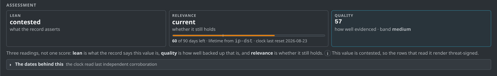
| Axis | The question it answers | Rendered as |
|---|---|---|
| Lean | What does the record assert this value is? | threat · benign ·
contested · none |
| Relevance | Does that assertion still matter today? | current · aging ·
expired · timeline uncertain |
| Quality | How much can the record be trusted? | a number, with the ledger as its audit trail |
Axis one
to_ids is a per-occurrence vote that a value is an
actionable indicator. It is already in the database, and IDS
exports already filter on it.
So the lean reports what the community said about the value, and MISP is never asked to form an opinion of its own.
Lean is categorical, and it does not age. A malware hash leans
threat forever. Only new assertions can move it.
| Lean | When |
|---|---|
none | no occurrences |
threat |
threat assertions dominate |
benign |
no threat assertion, or false-positive evidence
dominates, or a false_positive warninglist
hit carries it |
contested |
a conflict rule fires, or the to_ids stance
splits beyond tolerance |
to_ids is noisy in practice: MISP sets
per-type defaults, feed imports set it wholesale, and plenty of
organisations never curate it. Splitting the axes is what absorbs
that. Lean reports the assertion; quality grades how well it was
made. One uncurated org's to_ids = 1 is a threat lean
with low quality. Four organisations deliberately confirming is the
same lean with high quality.
Axis two
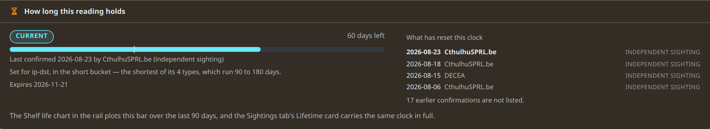
Fresh corroboration makes the reading more current and expiry makes it less. The page lists which corroborations reset the clock, with dates and the organisation that filed each.
Temporal precision feeds in here too. A missing
first_seen, a long created-to-published lag, or a
timestamp standing in for an observation date will each degrade
relevance to timeline uncertain and deduct from
quality.
Axis three
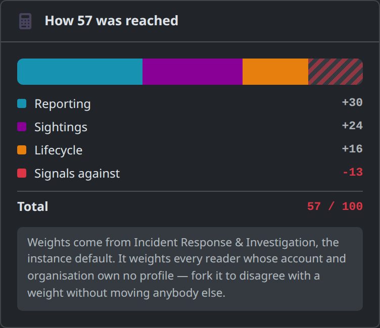
Contributions sum to the score, exactly.
Nothing is normalised, calibrated or post-processed. The sum is the number, by construction, so there is no second code path that could ever disagree with the ledger.
That is what makes a profile diff renderable, and what lets a reader argue with a single row.
The claim it makes is a narrow one. It measures how much corroborated, attributed, temporally precise weight stands behind the record, which is a different question from how malicious the value is.
A real value · this instance, today
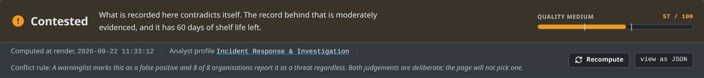
“Both judgements are deliberate; the page will not pick one.” A warninglist standing against eight reporting organisations is the finding here, and arithmetic that quietly cancelled one off against the other would bury it.
8.8.8.8
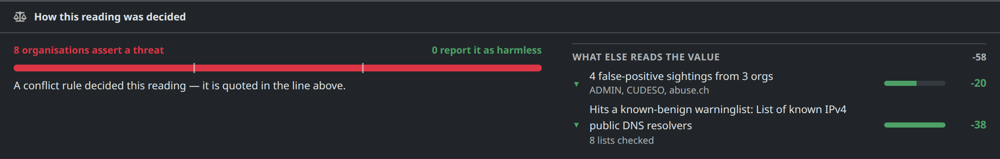
false_positive means reports about
this value are usually collateral: the sample really did touch it,
and it still is not the indicator. That says nothing about whether
the reporting organisations were right about their
incidents.8.8.8.8
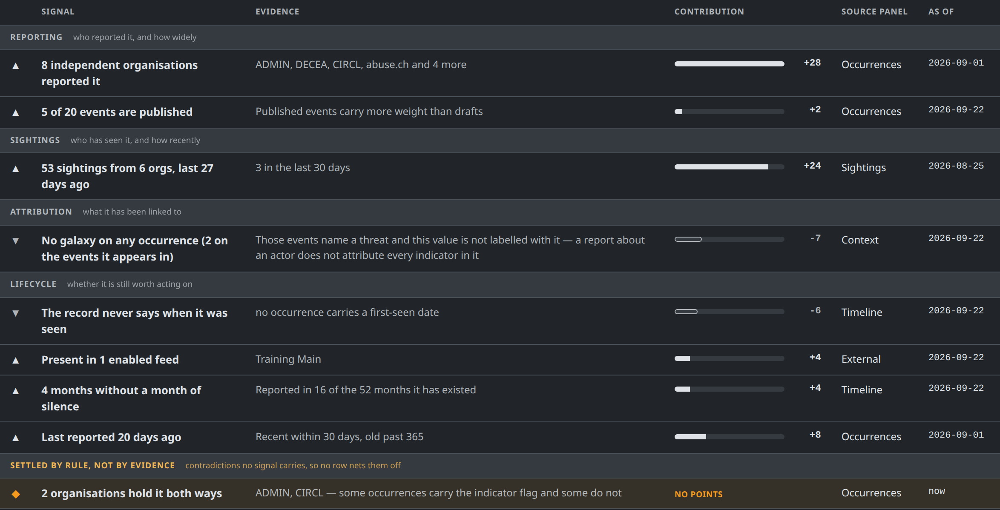
Each row carries its claim, the evidence behind it, what it contributed, the panel to go and argue with it in, and the date it was read. The last group is the page's own heading, settled by rule, not by evidence. It holds contradictions no signal owns, so no row quietly cancels them.
8.8.8.8
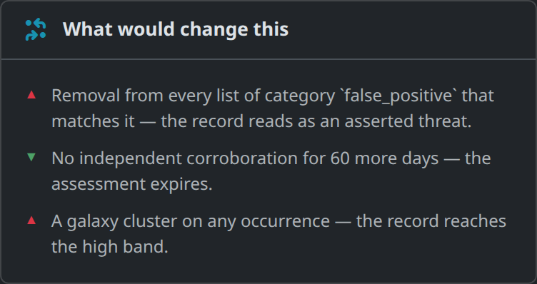
An assessment that cannot be falsified is an opinion.
The score is a sum of declared weights over declared evidence, so the engine can run it backwards and name the evidence that would move the reading, and by how much.
A signal that is linear in something countable says so, which is how the card can offer “two more organisations reporting it” where it would otherwise print a bare points gap.
Same engine, same instance
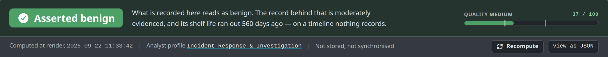
google.com, asserted benign. Four
organisations, three sightings, and no threat assertion left
standing.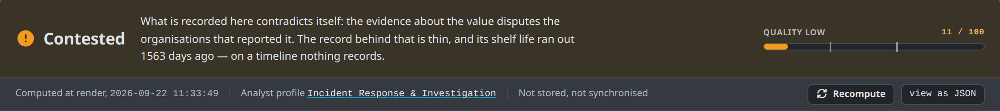
45.155.205.233, contested by a different
route: three false-positive sightings filed against a threat
assertion, with no warninglist involved.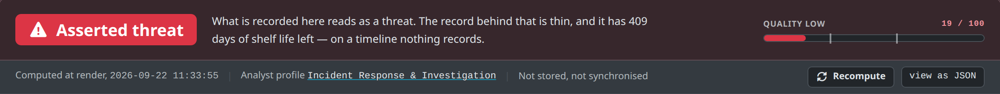
The signals
| Signal | Group | What it reads | Default points |
|---|---|---|---|
reporting.independent_orgs | Reporting | distinct organisations holding an occurrence | per_org 7, cap 28 |
reporting.published_ratio | Reporting | published events versus drafts | scale 9, none −2 |
sightings.volume_recency | Sightings | sighting count, org spread, recency | cap 24, none_recent −4 |
sightings.false_positive lean | Sightings | false-positive sightings and their org spread | per −3, per_extra_org −4,
cap −26 |
attribution.galaxy | Attribution | galaxy clusters on this value's own occurrences | per_cluster 7, cap 21,
absent −7 |
attribution.technique | Attribution | ATT&CK techniques | per_technique 3, cap 9 |
lifecycle.warninglist lean | Lifecycle | a warninglist hit and its category | no_hit 6, false_positive_hit −38,
known_hit 0 |
lifecycle.feeds | Lifecycle | presence in enabled feeds | per_feed 4, cap 8,
no_feed −2 |
lifecycle.continuity | Lifecycle | months without a gap in activity | per_month 1, cap 12 |
lifecycle.recency | Lifecycle | how recently it was reported | recent 8, old −4 |
record.temporal_precision | Lifecycle | first_seen presence, encoding lag |
dated 4, undated −6 |
enrichment.answer lean | Enrichment | stored answers from enrichment modules | per_verdict 12, cap 24 |
known_hit is zero by design. A
known-category hit says the value is shared
infrastructure, which is a different claim from harmless. The row
belongs on the page and counts for neither side, and a conflict rule
is what names its contradiction with wide reporting.
The contract
Only the signal knows how to say “53 sightings from 6 orgs, last 27 days ago” and put “3 in the last 30 days” underneath it. So a signal returns a whole ledger row.
The implementation owns the sentence. The profile owns the points.
Points are declared threat-signed: does this evidence point at a threat, and how hard. Which way the arrow renders is the engine's problem, and it anchors the lean rows to the lean's polarity at assembly.
Quality rows keep their declared sign whatever the lean, because how much record there is stays the same question whatever the record concluded.
{ "id": "reporting.independent_orgs",
"group": "Reporting",
"enabled": true,
"trust_weighted": true,
"points": { "per_org": 7, "cap": 28 },
"config": { "named": 4 } }
points is what evidence is worth,
config is the implementation's thresholds. Neither
has a fixed schema: each class declares its own keys, and
validation runs per implementation on save.
Honest states
A ledger row. The normal case.
Evaluated, with nothing to say. A ledger that listed everything which did not happen would be unreadable.
Named in not counted, with the reason: excluded by
policy, blocked by permissions, or simply no data.
A profile naming a signal this instance does not have. It is named on the page rather than dropped.
Absence and exclusion are different things. A signal whose input set
was emptied by an exclusion stays silent instead of firing its
absence key: zero sightings because sightings.self
removed them all is a very different value from one nobody has
sighted.
A score computed from eight of nine configured signals and presented as though nine had run would be the kind of quiet lie this feature exists to avoid. The banner still names the profile, because the profile is what weighted the assessment, imperfectly or not.
Cost
Every signal reads one shared context, built once per assessment: the occurrence tally, the sighting rows, the tag and galaxy sets, the warninglist result, the corroboration dates. That is one query pass for twelve signals.
Each signal declares its evidence class:
| Value | What happens |
|---|---|
| Normal | Everything. No budget in play, and no note on the page. |
| Long history | Row evidence fetched for the last 90 days, and the page says so, as profile policy, linked to the editor. |
| Too hot | Row-hungry signals are not evaluated
and land in not counted. The assessment is
computed from the signals that can still run. |
Row caps and wall-clock budgets were rejected on determinism. The page, the simulator and the export worker all compute this, and they have to agree. A row cap scores whichever rows the query happened to return, and a stopwatch scores by server load.
Configuration
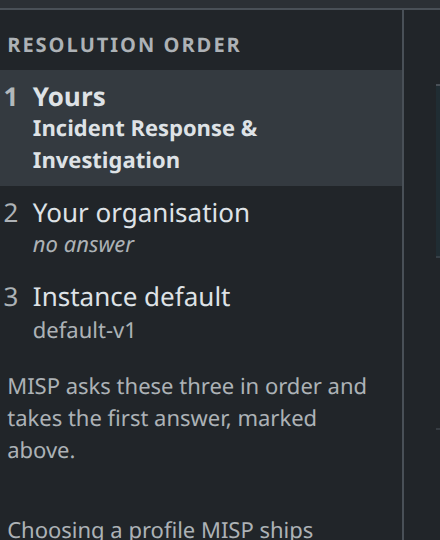
Nearest owner wins.
MISP asks three questions in order and takes the first answer: your own profile, then your organisation's, then the instance default. Exactly one profile is in force for any reader and value, which is what lets the page name it.
A fork is a full copy, with a fresh uuid and no memory of its parent, so an improved default never reaches one. That is why every map in a profile is an override set: a fork that overrides nothing keeps tracking what it came from.
Editing the instance default is a site-admin act. For an ordinary analyst the path is to fork, and that takes one click.
Configuration
| Section | What the analyst decides | Axis |
|---|---|---|
signals |
which signals run, and what each contributes | lean + quality |
thresholds |
where the bands sit, and the lean's supermajority | lean + quality |
escalations |
named rules that emit contested instead of
contributing points | lean |
exclusions |
evidence set aside before scoring: self-sightings, mirrored feeds, the long-history window | quality |
relevance |
the clock, the per-type TTLs, the precision tripwires | relevance |
reference |
what you believe about your sources: org trust, and which warninglists mean shared infrastructure rather than false positive | quality |
enrichment |
which modules this profile cares about, per type, and whether it will contact third parties | context |
Empty means “as before”. Every map is an override set, so an empty org-trust map weights all organisations equally, and the feature changes no behaviour until somebody edits something.
A profile cannot widen instance policy; it picks enrichment modules from the set the instance already enabled. Presentation stays out of it as well, because a version bump on the object that explains a score should never mean somebody changed their default tab.
Configuration
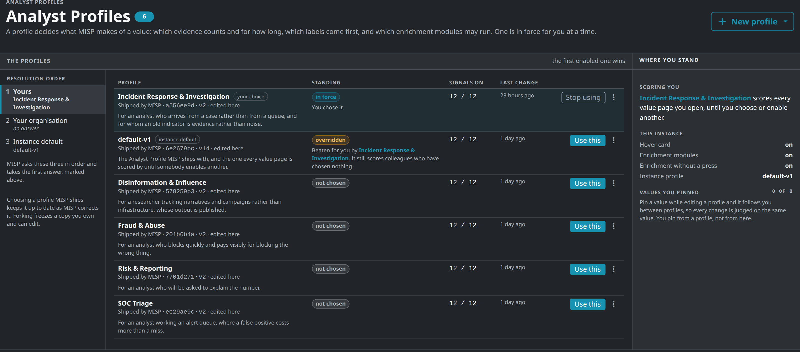
They are deliberately conservative. All five keep the shipped default's weights and bands, and what moves instead is shelf life and what the page shows first. Fraud & Abuse expires an IP in 14 days where Incident Response gives a hash five years, and Risk & Reporting changes no number at all. Choosing one MISP ships keeps it corrected upstream; forking freezes a copy you own.
Configuration
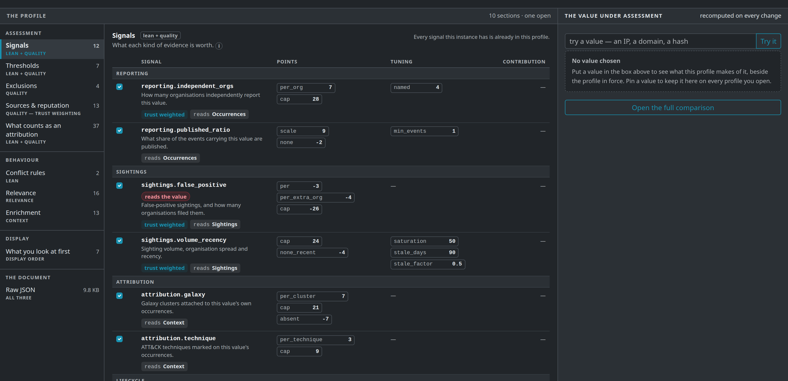
Configuration
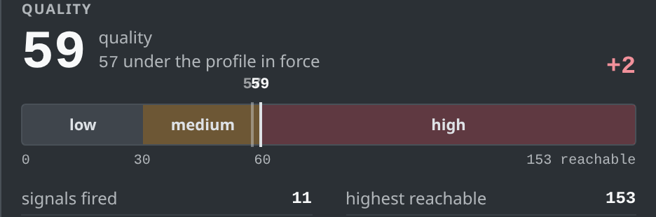
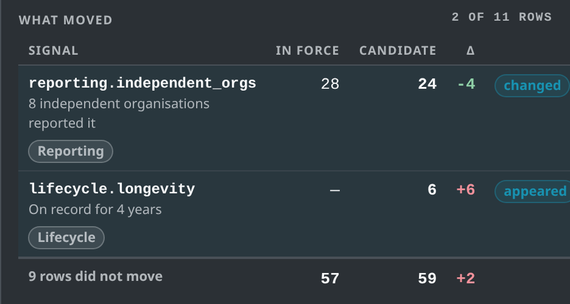
Put a value on the bench and it is
rescored as you type, against the profile in force. Here
independent_orgs went from 7 points an organisation to
3, worth −4, and a signal the profile did
not use was switched on, worth +6.
Two of eleven rows moved. The page says which ones and by how much, before anything is saved.
Pin a value and it follows you between profiles, so every change is judged on the same evidence.
Extending
Nothing about the catalogue is hardcoded. The twelve shipped signals are twelve files, and a thirteenth is a thirteenth file. The code that would have held a list of them was never written.
| Directory | Holds | On upgrade |
|---|---|---|
app/Model/ValueSignals/ |
the shipped catalogue | replaced |
app/Lib/ValueSignals/ |
what you drop in | never touched |
The same shape MISP already
uses twice, for Workflow's two module roots and the
decaying-model formula directory.
evaluate() throws, row
malformed: each is logged, skipped, and named in
not counted. None of them takes the page
down.Extending
The judgement it encodes: a value first reported nine years ago and still being reported is a different thing from one that appeared last week.
The catalogue scores how recently a value was reported and how continuously. Nothing scores how long it has stood.
The two schemas are what let the editor render a form for a signal it has never seen. Without them a drop-in is only half usable, and the admin has to hand-edit JSON to configure the file they just wrote.
Whole file:
example/LifecycleLongevity.php
class LifecycleLongevity extends ValueSignalBase
{
public $id = 'lifecycle.longevity';
public $group = 'Lifecycle';
public $reads = array('occurrences');
public function __construct()
{
$this->description = __('How long this has been on record.');
// The editor builds a form from these two.
$this->points_schema = array(
'established' => array('type' => 'int', 'default' => 6),
'brief' => array('type' => 'int', 'default' => -2));
$this->config_schema = array(
'established_days' => array('type' => 'int',
'default' => 365));
}
public function evaluate(array $context, array $config)
{
$oldest = (int)($context['occurrences']['oldest'] ?? 0);
if ($oldest === 0) { return null; } // silent
$days = (int)floor(($context['now'] - $oldest) / 86400);
$up = $days >= $this->setting($config, 'established_days');
return $this->row(
$this->points($config, $up ? 'established' : 'brief'),
sprintf(__('On record for %s'), $this->span($days)),
__('Established once it has stood for 365 days'),
$context,
$this->stampAsOf($oldest, $context));
}
}Extending
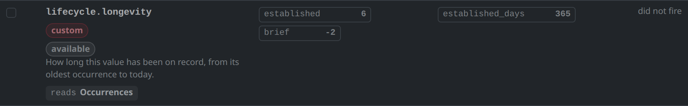
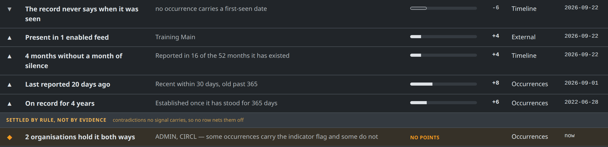
Closing
Working today: the three axes, the twelve signals, the ledger and its exact sum, conflict rules, exclusions, the relevance clock, org trust, the six shipped profiles, the editor, the bench, and the drop-in directories for signals and conflict rules.
Still landing: the export gate. The profile's
TTL does not gate restSearch yet. The design is a
materialised instance assessment: a background worker stores one
row per value under the instance default, and
restSearch filters on that stored row. It waits on
the value_assessments table.
Per-analyst export gating is out of scope by design, because a worker has to pick its profile before any caller exists.
Two analysts can now read the same value differently, and the system can show exactly where they parted.
Try it on your own instance.